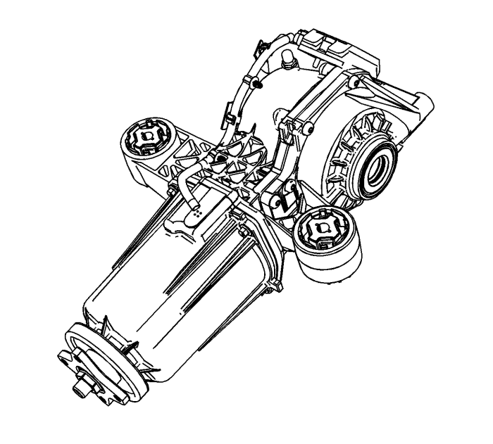

Descripción y funcionamiento del eje de accionamiento trasero

El conjunto del diferencial trasero de este vehículo consta de una carcasa de aluminio que contiene un embrague/acoplador eléctrico y un diferencial. El líquido del diferencial está contenido únicamente en la parte de la carcasa del diferencial.
El embrague y la carcasa del embrague se reparan como un conjunto. El intervalo de nivel de líquido para un funcionamiento correcto del conjunto del diferencial trasero es 500 ml. Las nuevas unidades de sustitución de servicio se enviarán secas (sin líquido). Llene las nuevas unidades con 500 ml de líquido sintético GL.
El sistema del eje de accionamiento trasero funciona de la siguiente manera:
| • | El sistema distribuye par uniformemente entre las 2 ruedas traseras. |
| • | El sistema distribuye par a las ruedas traseras para mejorar la tracción y los resultados de control del vehículo. |
| • | El conjunto de regulación del embrague del diferencial trasero contiene un embrague principal, embrague piloto, bobina electromagnética, eje de rueda trasera, leva principal y leva piloto. |
| • | El módulo de regulación del embrague del diferencial trasero funciona utilizando un paquete de embrague para transferir par. El mecanismo de acoplamiento consta de una bobina electromagnética e inducido que modula el par mediante un embrague piloto y dispositivo de amplificación de empuje. |
| • | El diferencial trasero dispone de un microcomputador que recibe información del módulo de regulación del embrague del diferencial trasero. |
| • | El módulo de regulación del embrague del diferencial trasero dispone de un sensor de temperatura interno, que mantendrá una compensación de temperatura consistente y continua para transferir el par desde -40°C hasta +120°C. Cuando se determine que la temperatura del módulo ha superado sus límites, el módulo de regulación del embrague del diferencial trasero desactivará temporalmente el sistema de accionamiento trasero y activará el mensaje de AWD desactivado. Cuando la temperatura del módulo vuelve a ajustarse a los límites, el módulo de regulación del embrague del diferencial trasero activará el sistema de accionamiento trasero. El sensor de temperatura y la bobina son internas del diferencial trasero, y se sustituyen como un conjunto. |
| • | Si el vehículo se conduce de manera muy agresiva o si se ha utilizado un tamaño de neumático imprevisto, se activará el mensaje de AWD desactivado. Esto no debe provocar la sustitución del módulo de regulación del embrague del diferencial trasero. |
| • | El mensaje de desactivación de AWD se activará si se ha instalado el neumático de repuesto mini o un neumático muy pequeño. Esto no debe provocar la sustitución del módulo de regulación del embrague del diferencial trasero. |
| • | La bobina del embrague de accionamiento de ruedas traseras recibe corriente el módulo de regulación del embrague del diferencial trasero que se utiliza para modular el par utilizando el mecanismo de acoplamiento. Cuando mayor sea la corriente, mayor el par. El intervalo de corriente segura es entre 0,1-3,0 A. si el intervalo de corriente no se ajusta a estos valores, se establecen DTC y aparecerá el mensaje de servicio de AWD. El sensor de temperatura y la bobina del embrague de accionamiento de ruedas traseras son internas del diferencial y se sustituyen como un conjunto. |
| • | El módulo utiliza la velocidad del vehículo, el ángulo de dirección, el deslizamiento de ruedas, la compensación térmica y la intervención de control del chasis para determinar la corriente. Estos son mensajes de datos de serie recibidos de otros módulos. |
| • | Si se sustituye un módulo de regulación del embrague del diferencial trasero, es necesario configurar el módulo para calibrar la regulación del embrague. El conector del embrague de accionamiento de ruedas traseras que se conecta al módulo de regulación del embrague del diferencial trasero tendrá un código de 2 dígitos. Utilice dicho código de 2 dígitos para programar el módulo de regulación del embrague del diferencial trasero usando la herramienta de diagnóstico. |
| • | La tensión que llega al módulo es de entre 9-16 V. El módulo establecerá un DTC de baja tensión y un DTC de alta tensión para indicar que el valor de tensión no se ajusta al intervalo. |
| • | El centro de información del conductor puede mostrar un mensaje de servicio del accionamiento de las cuatro ruedas. El icono ámbar de AWD del cuadro del panel de instrumentos se iluminará cuando se desactive el sistema. |
| © Copyright Chevrolet Europe. All rights reserved |